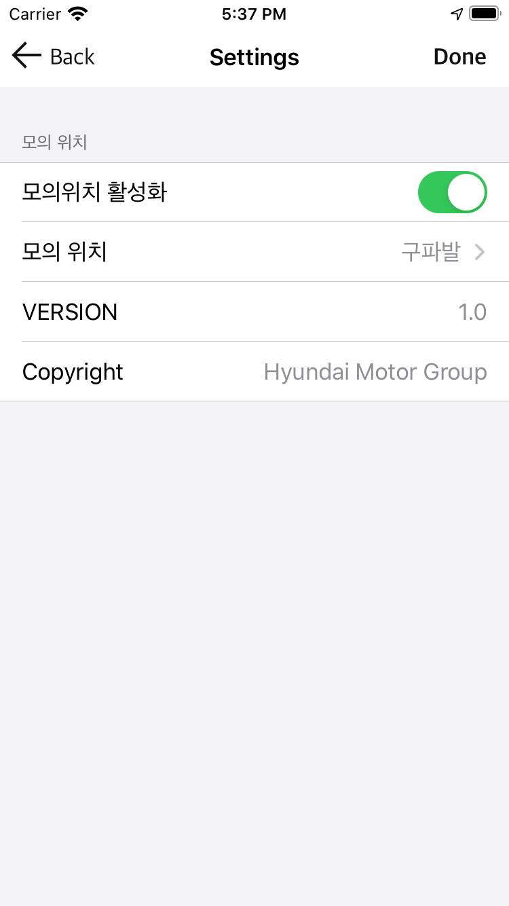

Shucle iOS distribution
배포 시간: 2020-09-18 08:38:20
Shucle iOS DOWNLOAD
Changes
- 사이드 메뉴 추가 - 테스트용 카카오 로그인은 사이드 메뉴에서
- 출도착지 선택, 가호출, 탑승 프로세스 관련 화면 추가
- 테스트용 모의 위치를 위한 "개발" 메뉴 추가
- 가호출 로직 추가(서버 변경에 따른, 로직 수정 필요)
- TODO: 최근(9월 17일) 서버 변경건에 대해,
Android앱의 호출/탑승 동작이 확인되면, iOS에도 적용 예정
- 모의위치 설정 방법
- 설정 -> 개발 -> 모의 위치 활성화
- 원하는 모의 위치 선택
- 다시 홈 화면으로 돌아와서 내위치 버튼을 누르면,
모의위치 확인 가능
- Note: 서버 연동
- 프로필, 홈화면의 "내 이름"
- 위치 -> 주소 변환 (도착지 검색, 출도착지 선택)
- 나머지는 서버 연동 버전 업데이트 필요

